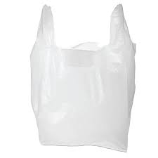
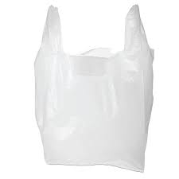

En esta categoría deben reciclarse las botellas de vidrio, tarros, trozos de espejos y cristales rotos, entre otros. No entran los materiales como la cerámica o la porcelana, tampoco hay que depositar metales ni plásticos. Antes de tirar una botella o tarro de vidrio al contenedor verde hay que quitarle el tapón y reciclarlo en el contenedor correspondiente según sea de metal, de plástico o de corcho
Es el destinado a contener residuos tóxicos y peligrosos, como desechos hospitalarios o baterías. Cuando se habla del contenedor de color rojo, principalmente se están hablando de desechos peligrosos. Entre los desechos que se incluyen en esta categoría se encuentran: desechos hospitalarios, baterías, pilas, insecticidas, aerosoles, aceites o productos tecnológicos
Para almacenar cualquier tipo de cartón procedente de cajas, envases de cartón y cualquier tipo de papel como periódicos, revistas, documentos, folletos, papeles de envolver, pancartas de publicación, entre otros. Es importante plegar las cajas de cartón antes de depositarlas en el contenedor para que ocupen el menor espacio posible y den cabida a más material para reciclar
Es el adecuado para reciclar plásticos, latas y envases. En este tipo de contenedores se debe almacenar todo material que esté hecho a base de plástico. Como botellas de plástico, envases de alimentos, bolsas de plástico, briks de leche, etc. También las latas de conserva y de refrescos deben depositarse en el contenedor amarillo.

Dado que el consumo se ha convertido en un problema serio, que afecta los recursos naturales, lo primero que debemos hacer es reducir nuestro consumo a nivel de bienes y de gasto energético estamos contribuyendo de una forma importante a disminuir su impacto sobre el medio ambiente, se refiere a un hecho claro de ahorrar día a día en reducir el consumo de bienes, reutilizar alargar la vida útil de los productos.
 
